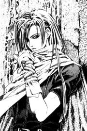

Forums galactiques > Assemblée Galactique : diplomatie officielle > Ptit nouveau recherche coalition...
Pages : 1 2
| CrimsonFury 47 Respect diplomatique : 194  13/12 ETU 20:42 | Score : -1 Détails Salut à tous, comme l'actuel Sans-Terrien maxsims1 il y'a quelques heures, je viens juste de commencer à jouer, je suis un représentant et je recherche une coalition qui voudrait bien m'acceuillir, moi, pauvre newbie que je suis...
| ||
| thorgal12 Respect diplomatique : 159  13/12 ETU 20:54  | Score : 0 Détails Salut à toi CrimsonFury 47 et bien venu dans notre galaxie.
Je te livre une petite régle de survit: Ne dévelope pas ton hyperfusion tant que toute les planétes de ton systéme ne soit à toi ou a un de tes colocataires, arange toi avec eu par MP, si tu le dévelope avant, ton systéme sera ouvert aux autre commandants et tu risque de te faire attaquer... Quand à rentrer dans une coalition, je t'invite a lire les anciens sujet de l'assemblée pour en choisir une..... | ||
| CrimsonFury 47 Respect diplomatique : 194 13/12 ETU 20:56 | Score : -1 Détails Merci pour le conseil.
| ||
| wima Respect diplomatique : 402  13/12 ETU 21:03 | Score : 2 Détails Bonsoir,
Plusieurs coalitions sont présentes dans la galaxie. Elles défendent des idéaux diamétralement opposés (pour certaines). Pour ma part, je fais partie de l'AST, une coalition visant l'égalité des chances entre petits Commandants et Commandants plus puissants. Pour ce faire, une politique de redistribution a été instaurée ainsi que diverses subventions. L'AST peut te fournir un soutien non négligeable, qu'il soit économique, militaire ou diplomatique. Les membres de l'AST sont soudés et solidaires et n'hésiterons pas à te fournir aide, conseils.... J'ai vite été séduit par cette coalition et ne regrette en rien mon adhésion. Comme dans chaque coalition, il est nécessaire de s'impliquer. L'attitude touriste "j'attends que l'on me donne des planètes et des leems" est donc à proscrire. Je ne saurais que trop te conseiller que nous rejoindre mais c'est à toi de choisir quels idéaux tu veux soutenir. Les nouveaux qui ont rejoint l'AST ne devraient pas tarder à rappliquer pour te donner leurs impressions... Mais des "vieux de la vieille" de l'AST peuvent également me corriger, houspiller, huer, me honnir...(ou peut-être me plussoyer ?) Bien à vous, Wima | ||
| Ta Brioche Respect diplomatique : 27  13/12 ETU 21:06 | Score : 0 Détails Je suis l Empereur maitre de la coalition des Jeunes Ultremistes. Nous sommes tes predateurs petit commandant cache toi bien HAHAHAHA.
| ||
| CrimsonFury 47 Respect diplomatique : 194 13/12 ETU 21:50 | Score : -1 Détails C'est ça, merci bcp Ta Brioche! Dommage ton pseudo était sympa...En attendant, moi, je rejoins l'AST!
| ||
| Ta Brioche Respect diplomatique : 27 13/12 ETU 22:15 | Score : 2 Détails Je n en attendais pas moins d un tel avorton.
| ||
| Mac Polar II Respect diplomatique : 224  13/12 ETU 22:40 | Score : 1 Détails demain L'internationale sera le genre humain.
Bienvenue à tous les nouveaux. La marée humaine vous submergera, Anciennes Elites! | ||
| Necrid Respect diplomatique : 26  13/12 ETU 22:48 | Score : 0 Détails L'Interplanétaire, Camarade, l'Interplanétaire !
| ||
| wima Respect diplomatique : 402 13/12 ETU 22:51 | Score : 1 Détails Je dirais même plus l'Interplanétaire Socialiste, Camarade, l'Interplanétaire Socialiste !
| ||
| gOlstein Respect diplomatique : 413  13/12 ETU 22:57 | Score : 0 Détails Un lustre s'effondra sur CrimsonFury 47 alors qu'il était dans les couloirs de l'Assemblée. La présence de l'Archichancelier sur les lieux du crime ne fut pas sujet à enquête.
| ||
| Necrid Respect diplomatique : 26 13/12 ETU 22:59 | Score : 0 Détails Si ce n'est par les agents de la CNF qui étaient dissimulés dans le public, venu assister en masse aux débats malgré leur affligeante mais ordinaire vacuité...
| ||
| Crimson Respect diplomatique : 18  14/12 ETU 18:08 | Score : 0 Détails CrimsonFury 47... Hmf pas très original... On est parents?
| ||
| CrimsonFury 47 Respect diplomatique : 194 14/12 ETU 19:01 | Score : -3 Détails Hmmm...Je ne pense pas m'enfin pourquoi pas? CrimsonFury est un perso de Twisted Metal, pour ceux qui connaissent, et 47 vient de Hitman, of course!
| ||
| wima Respect diplomatique : 402 14/12 ETU 22:15 | Score : 0 Détails Bonsoir CF47,
Je pense qu'il serait peut-être judicieux de donner ici vos impression sur l'AST. En deux-trois mots, n'ayez crainte. Ne vous fendez pas d'un long discours. Mais je pense que les nouveaux Commandants liront probablement ce thread et que vous êtes le plus à même de les renseigner. En effet, les messages des Anciens de l'AST (et le mien par la même occasion) peuvent sembler n'avoir pour but que la propagande alors que votre avis serait plus "objectif" : vous venez d'intégrer l'AST et pouvez donc faire partager des réactions "à chaud". Je vous souhaite à tous une très bonne soirée. ASTellement vôtre, Wima | ||
| CrimsonFury 47 Respect diplomatique : 194 14/12 ETU 22:47 | Score : -1 Détails Nouveaux commandants, nouvelles commandantes, bonjour(ou bonsoir!)
Wima m'a demandé de donner mon avis sur l'AST afin que les nouveaux commandants puissent avoir l'avis d'un débutant, car j'en suis un, sur la question:"Faut-il rejoindre l'AST?". La réponse est oui. Tout d'abord parce que la constitution de l'Armée des Sans Terres dit qu'elle n'a d'autre but que d'aider les commandants les plus modestes à se développer, et ça, c'est un avantage pour un novice! Secundo, les 45 commandants de l'AST m'ont acceuilli les bras ouverts(même si certains ne me connaissent pas encore!)et sont tous très sympathiques. Au moins, EUX, ils n'agressent pas les noobs, hein, Ta Brioche? Pour l'instant donc, je suis très satisfait de mon adhésion. A toutes les nouvelles recrues,cordialement, CrimsonFury 47 (CF 47) | ||
| maxsims1 Respect diplomatique : 0 14/12 ETU 22:55 | Score : 0 Détails Je suis aussi très satisfait de mon adhésion. Entre les conseils, la solidarité économique et la dYnamique des membres, cette coalition est vraiment profitable pour chaques membres.
| ||
| wima Respect diplomatique : 402 14/12 ETU 23:10 | Score : 0 Détails Je tiens à remercier CF47 et Maxsims1 pour leurs interventions. Il est nécessaire que les Commandants "newbies" puissent se forger leurs avis en entendant l'avis de Commandants récemment intégrés. Eux seuls peuvent fournir des réponses aux questions que se posent tous les nouveaux Commandants, car ils parlent en connaissance de cause.
ASTellement vôtre, Wima | ||
| maxsims1 Respect diplomatique : 0 14/12 ETU 23:16 | Score : 0 Détails Je serais heureux d'informer tout commandant hésitant à intégrer l'AST.
| ||
| Hide Respect diplomatique : 0  15/12 ETU 15:57 | Score : 0 Détails Bonsoir a tous :)
J'avoue etre fort tenté de vous rejoindre, mais je ne sais hélas comment faire... J'attend de vos nouvelles en sirotant une cannette de Kron (neocron powa? :) )au spacio bar |
Pages : 1 2
Forums galactiques > Assemblée Galactique : diplomatie officielle > Ptit nouveau recherche coalition...